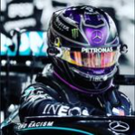

Avis
Chaque semaine, vous allez retrouver plusieurs avis de pilote du discord qui vont nous permettre de s'améliorer.

Un discord grave cool ! Les staffs sont accueillants et très gentils (surtout LMR), malheureusement peu de gens en vocal sauf pour les diffusions mais en tous cas les staffs sont proches de la communauté donc je metterais 4 étoile sur tripadvisor.
willy

Discord qui est très dynamique avec beaucoup de redondance. Il manque un peu d'activité quand y a pas de grand prix mais tout le reste ça va